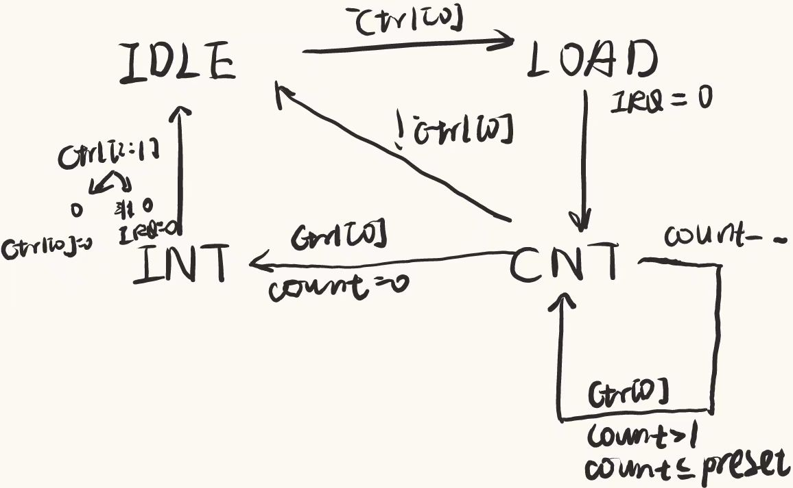

P7-CPU-设计文档
一些思考
精确异常有乘除槽关的处理
课程要求:
在进入中断或异常状态时，如果受害指令及其后续指令 已经改变了 MDU 的状态，则无需恢复。
假设 CP0 在 M 级，MDU 在 E 级，考虑以下情况：
mult在 E 级启动了乘法运算，流水到 M 级时产生了中断，此时无需停止乘法计算，其它乘除法指令同理。mthi在 E 级修改了 HI 寄存器，流水到 M 级时产生了中断，此时无需恢复 HI 寄存器的值，mtlo同理。mult在 E 级，受害指令在 M 级，此时还未改变 MDU 状态，不应开始乘法计算，其它乘除法指令同理。mthi在 E 级，受害指令在 M 级，此时还未改变 MDU 状态，不应修改 HI 寄存器的值，mtlo同理。
对于要求1和2我们不用特殊处理，而对于3和4我们修改一下乘除槽开始和写HI、LO寄存器的条件即可。
- 乘除槽开始(
busy即置1)的条件:start&&!Req - 写寄存器的条件:
1
2
3
4
5
6
7case(MDUOp)
`mthi:
HI <= (Req) ? HI : A;
`mtlo:
LO <= (Req) ? LO : A;
//……
endcase
计算类指令溢出
溢出的判断很简单，扩充为33位，正常计算后比较最高两位是否相同即可。
我们需要特别注意的是,alu的计算溢出分别对应三种情况:
- add,addi,sub型计算指令
- load型访存指令的地址计算
- store型存储指令的地址计算
为了保证CPU.v的简洁，我选择给alu增加是否溢出且何种种类溢出判断的功能1
2
3
4
5
6
7
8assign temp = (ALUOp == `add||ALUOp == `store||ALUOp == `load) ? {srcA[31],srcA}+{srcB[31],srcB} :
(ALUOp == `sub) ? {srcA[31],srcA}-{srcB[31],srcB} : 32'd0;
assign OvType = (temp[32] == temp[31]) ? 3'b000 :
(ALUOp == `add) ? 3'b001 :
(ALUOp == `load) ? 3'b010 :
(ALUOp == `store) ? 3'b011 :
(ALUOp == `sub) ? 3'b100 : 3'b111;
Req时的操作
pc
直接修改PC，req时直接赋值4180
npc
- req时直接赋值4180
- eret在D级时直接赋值EPC
有一位学长的博客取的是EPC+4
但是教程给的示例中有在中断处理时有+4操作(处理异常的方法是跳过这条指令)
所以这里直接写EPC即可
DM
DM在M级完成写的操作，M级异常指令不应该产生任何影响，所以req时要额外清空MemType和MemWd
GRF在W级完成写的操作，直接暴力清空W级流水寄存器就可以避免异常指令产生影响。
流水线寄存器
优先级:reset>req>stall/flush
空泡问题:
- 在阻塞时我们会往流水线中插入
nop，这个nop的pc和bd信号都是 0。此时宏观 PC 会显示错误的值。并且如果此时发生了中断，就会导致EPC存入错误的值。 - 按照道理来讲，如果插入了
nop，它的PC和bd应该是目前这条指令的值。
问题的解决与处理:
以下处理均在if(reset||req||……)中
- D级流水寄存器
Stall优先级高于flush(连写2次EPC后立即eret跳转)
同时存在flush(在本次作业中只在eret时有效)1
2
3
4
5PC_D <= (reset) ? 32'h3000 :
(Req)? 32'h4180 :
(Stall) ? PC_D :
(flush)? EPC : 32'h0;
BD_D <= 1'b0; - E级流水寄存器
同时存在stall1
2
3
4PC_E <= (reset)? 32'h3000:
(Req)? 32'h4180:
(Stall)? PC_D : 32'h0;
BD_E <= Stall ? BD_D : 1'b0; - M级流水寄存器暴力清空，但
PC_M赋0x4180 - W级流水寄存器暴力清空(溢出指令不应该有任何效果)
BD的取值
判断一条指令是否是延迟槽指令就是判断它的上一条指令是否是跳转指令。
而最早在F级就可以解码判断该指令的上一条指令是否是跳转指令1
2
3
4
5
6
7\\ctrl.v
assign BD = (beq||bne||jal||jr||j||eret);
\\CPU.v
CTRL ctrlF(
.Instr(Instr_D),
.BD(BD_F)
);
接下来写入流水寄存器正常流水即可。
其它
mtc0写入到PC0不应该有输出syscall识别的写法:Instr[x:x]==这种写法有隐患，直接比较对应值，反正syscall命令没有参数。sb的地址不能取0x2fff(mars会识别为错误)。- 错误地址对应的Instr应该在F级就清0，否则程序可能不知道从哪读出来一个值，这个值如果恰好是机器码且为
mtlo或者mthi操作，就会错误地改变HI和LO寄存器地值，对后续操作产生错误影响。(jr $31,$31的值不是有效地址，当jr在E级时PC_F = $31,则受害指令是该指令，而不是jr,jr后的延迟槽指令此时在D级，可以正常执行)。
新增指令的情况
- 新增Int的情况不要忘了EXL。
- 不要忘了大前提条件。
- 在D级判断异常，且需要用到Reg18或者19,注意单开一种阻塞情况。
- 判断有关PC的异常，加入mdu的开始条件，如果该指令异常则不开始乘除槽。
（其它指令都在M级或者W级产生效果，可以不处理）
思考题
请查阅相关资料，说明鼠标和键盘的输入信号是如何被 CPU 知晓的？
鼠标和键盘等外设不是直接与CPU相连的，中间需要通过软件(驱动)来连接。驱动和硬件之间通过操作系统进行处理。
请思考为什么我们的 CPU 处理中断异常必须是已经指定好的地址？如果你的 CPU 支持用户自定义入口地址，即处理中断异常的程序由用户提供，其还能提供我们所希望的功能吗？如果可以，请说明这样可能会出现什么问题？否则举例说明。（假设用户提供的中断处理程序合法）
因为异常处理程序是统一的，要执行异常处理程序就是要跳转到这个pc，再继续执行。
0x4180本身位置的控制有其空间分配的优越性。用户自定义有可能会造成正常程序和异常程序的PC冲突，导致不必要的麻烦。
为何与外设通信需要 Bridge？
高内聚，低耦合。外设可以添加，但是CPU不应随意改变。这样当我们添加新外设，只需改动Bridge来控制要读谁，要写谁的问题。
请阅读官方提供的定时器源代码，阐述两种中断模式的异同，并分别针对每一种模式绘制状态移图。
共同之处在于，ctrl[0]对中断的产生都有明显的控制作用。
差别在于是否具有周期性。
对于IDLE
ctrl[0]为0转为状态LOAD，并把IRQ置0- 无条件进入计时阶段
- 如果中途
ctrl[0]为1就终止，进入IDLE - 否则就计数完成时进入INT，发送中断。
- 如果中途
对于INT
ctrl[2:1] == 2’b00就一直中断，进入IDLE继续循环。- 否则，IRQ置0，即只中断这一个周期，然后进入IDLE重新循环。

倘若中断信号流入的时候，在检测宏观 PC 的一级如果是一条空泡（你的 CPU 该级所有信息均为空）指令，此时会发生什么问题？在此例基础上请思考：在 P7 中，清空流水线产生的空泡指令应该保留原指令的哪些信息？
会出现EPC值不是我们所期望的值的问题。
空泡也应该继承PC和BD的值，这样才不会对程序产生影响。
为什么
jalr指令为什么不能写成jalr $31, $31？
会存在冒险。jalr指令的功能是跳转到对应寄存器中的地址，同时把PC+4（有延迟槽则PC+8）的值写入对应寄存器中。如果后面两个寄存器都是相同的，则先跳转再写入还是先写入再跳转就会产生两种不一样的结果。因此为了避免这种未知情况的发生，不能这样写。
测试方案
handler
handler的流程大致相同，可以有一个然后循环使用。
这个的功能还是很完善的。1
2
3
4
5
6
7
8
9
10
11
12
13
14
15
16
17
18
19
20
21
22
23
24
25
26
27
28
29
30
31
32
33
34
35
36
37
38
39
40
41
42
43
44
45
46
47
48
49
50
51
52
53
54
55
56
57
58
59
60
61
62
63
64
65
66
67
68
69
70
71
72
73
74
75
76
77
78
79
80
81
82
83
84
85
86
87
88
89
90
91
92
93
94
95
96
97
98
99
100
101
102
103
104
105
106
107
108
109
110
111
112
113
114
115
116
117
118
119
120
121
122
123
124
125
126
127
128
129
130
131
132
133
134
135
136
137
138
139
140
141
142
143
144
145
146
147
148
149
150
151
152
153
154
155
156
157
158
159
160
161
162
163
164
165
166
167
168
169
170
171
172
173
174
175
176
177
178
179
180
181
182
183
184
185
186
187
188
189
190
191
192
193
194
195
196
197
198
199
200
201
202
203
204
205
206
207
208
209
210
211
212
213
214
215
216
217
218
219
220
221
222
223
224
225
226
227
228
229
230
231
232
233
234
235
236
237
238
239
240
241
242
243
244
245
246
247
248
249
250
251
252
253
254
255
256
257
258
259
260
261
262
263
264
265
266
267
268
269
270
271
272
273
274
275
276
277
278
279
280
281.ktext 0x4180
_quick_handle:
mfc0 $k0, $13
andi $k0, $k0, 0x00fc
ori $k1, $0, 0x0010
beq $k0, $k1, adel_handler_quick
nop
beq $0, $0, _entry
nop
_entry:
mfc0 $1, $13
ori $k0, $0, 0x1000
sw $sp, -4($k0)
addi $k0, $k0, -256
add $sp, $0, $k0
beq $0, $0, _save_context
nop
adel_handler_quick:
mfc0 $k0, $14
addi $k0, $k0, -0x3000
lui $k1, 0xffff
ori $k1,$k1,0xe000
and $k0,$k0,$k1
bne $k0,$0,adel_type_2
nop
mfc0 $k0, $14
andi $k0,$k0,3
bne $k0,$0,adel_type_1
nop
jal _entry
nop
adel_type_1:
mfc0 $k0, $14
andi $k0, $k0, 0xfffc
addi $k0, $k0, 4
mtc0 $k0, $14
eret
ori $1, $0, 0x1234
adel_type_2:
ori $k0, $0, 0x2180
lw $k0, 0($k0)
mtc0 $k0,$14
nop
eret
ori $1, $0, 0x1234
_main_handler:
mfc0 $k0, $13
andi $k0, $k0, 0x00fc
ori $k1, $0, 0x0000
beq $k0, $k1, int_handler
nop
ori $k1, $0, 0x0010
beq $k0, $k1, adel_handler
nop
ori $k1, $0, 0x0014
beq $k0, $k1, ades_handler
nop
ori $k1, $0, 0x0028
beq $k0, $k1, ri_handler
nop
ori $k1, $0, 0x0030
beq $k0, $k1, ov_handler
nop
ori $k1, $0, 0x0020
beq $k0, $k1, syscall_handler
nop
int_handler:
sw $ra, 0($sp)
addi $sp, $sp, -16
mfc0 $v0, $12
sw $v0, 0($sp)
mfc0 $v0, $13
sw $v0, 4($sp)
# check INT[3]
lw $v0, 0($sp)
lw $v1, 4($sp)
and $v0, $v1, $v0
andi $v0, $v0, 0x800
bne $v0, $0, timer1_handler
nop
# check INT[2]
lw $v0, 0($sp)
lw $v1, 4($sp)
and $v0, $v1, $v0
andi $v0, $v0, 0x400
bne $v0, $0, timer0_handler
nop
jal interrupt_handler
nop
interrupt_handler:
lui $k0, 0xffff
ori $k0, $k0, 0xffff
addi $k1, $0, 0x2180
lw $k1, 0($k1)
addi $k0, $0, 0x7f20
sb $0, 0($k0)
jal _restore_context
nop
timer0_handler:
lui $k0, 0xffff
addi $k1, $0, 0x2180
lw $k1, 0($k1)
addi $k0, $0, 0x7f00
sw $0, 0($k0)
jal _restore_context
nop
timer1_handler:
lui $k0, 0xffff
ori $k0, $k0, 0x1
addi $k1, $0, 0x2180
lw $k1, 0($k1)
addi $k0, $0, 0x7f10
sw $0, 0($k0)
jal _restore_context
nop
adel_handler:
mfc0 $t0, $14
mfc0 $k0, $13
lui $t2, 0x8000
and $t3, $k0, $t2
addi $t0, $t0, 4
bne $t3, $t2, adel_nxt
nop
addi $t0, $t0, 4
adel_nxt:
mtc0 $t0, $14
jal _restore_context
nop
ades_handler:
mfc0 $t0, $14
mfc0 $k0, $13
lui $t2, 0x8000
and $t3, $k0, $t2
addi $t0, $t0, 4
bne $t3, $t2, ades_nxt
nop
addi $t0, $t0, 4
ades_nxt:
mtc0 $t0, $14
jal _restore_context
nop
ri_handler:
mfc0 $t0, $14
mfc0 $k0, $13
lui $t2, 0x8000
and $t3, $k0, $t2
addi $t0, $t0, 4
bne $t3, $t2, ri_nxt
nop
addi $t0, $t0, 4
ri_nxt:
mtc0 $t0, $14
jal _restore_context
nop
ov_handler:
mfc0 $t0, $14
mfc0 $k0, $13
lui $t2, 0x8000
and $t3, $k0, $t2
addi $t0, $t0, 4
bne $t3, $t2, ov_nxt
nop
addi $t0, $t0, 4
ov_nxt:
mtc0 $t0, $14
jal _restore_context
nop
syscall_handler:
mfc0 $t0, $14
mfc0 $k0, $13
lui $t2, 0x8000
and $t3, $k0, $t2
addi $t0, $t0, 4
bne $t3, $t2, syscall_nxt
nop
addi $t0, $t0, 4
syscall_nxt:
mtc0 $t0, $14
jal _restore_context
nop
_restore:
eret
ori $1, $0, 0x1234
_save_context:
sw $2, 8($sp)
sw $3, 12($sp)
sw $4, 16($sp)
sw $5, 20($sp)
sw $6, 24($sp)
sw $7, 28($sp)
sw $8, 32($sp)
sw $9, 36($sp)
sw $10, 40($sp)
sw $11, 44($sp)
sw $12, 48($sp)
sw $13, 52($sp)
sw $14, 56($sp)
sw $15, 60($sp)
sw $16, 64($sp)
sw $17, 68($sp)
sw $18, 72($sp)
sw $19, 76($sp)
sw $20, 80($sp)
sw $21, 84($sp)
sw $22, 88($sp)
sw $23, 92($sp)
sw $24, 96($sp)
sw $25, 100($sp)
sw $28, 112($sp)
sw $29, 116($sp)
sw $30, 120($sp)
sw $31, 124($sp)
mfhi $k0
sw $k0, 128($sp)
mflo $k0
sw $k0, 132($sp)
jal _main_handler
nop
_restore_context:
addi $sp, $0, 0x1000
addi $sp, $sp, -256
lw $2, 8($sp)
lw $3, 12($sp)
lw $4, 16($sp)
lw $5, 20($sp)
lw $6, 24($sp)
lw $7, 28($sp)
lw $8, 32($sp)
lw $9, 36($sp)
lw $10, 40($sp)
lw $11, 44($sp)
lw $12, 48($sp)
lw $13, 52($sp)
lw $14, 56($sp)
lw $15, 60($sp)
lw $16, 64($sp)
lw $17, 68($sp)
lw $18, 72($sp)
lw $19, 76($sp)
lw $20, 80($sp)
lw $21, 84($sp)
lw $22, 88($sp)
lw $23, 92($sp)
lw $24, 96($sp)
lw $25, 100($sp)
lw $28, 112($sp)
lw $30, 120($sp)
lw $31, 124($sp)
lw $k0, 128($sp)
mthi $k0
lw $k0, 132($sp)
mtlo $k0
lw $29, 116($sp)
ori $1,$0,1
beq $0, $0, _restore
nop
内部异常测试
简单捏了一点数据，主要还是采取测评机自动化测试。
设置为不允许外部中断。1
2
3
4#设置为不允许外部中断
ori $t0, $0, 0xfc00
mtc0 $t0, $12
sw $t0,0($0)
这里简单写一个测试延迟槽指令的。1
2
3
4
5
6
7
8
9
10
11
12
13# 算术溢出
lui $t0, 0x7fff
ori $t0,$t0,0xffff
lui $t1, 0xffff
ori $t2,0xffff
beq $0,$0,label
# 延迟槽指令
sub $t2, $t0, $t1
label:
end:
beq $0, $0, end
nop
外部中断测试Int
手动写一个简单的tb1
2
3
4
5
6
7
8
9
10
11
12
13
14
15
16
17
18
19
20
21
22
23
24
25
26
27
28
29
30
31
32
33
34
35
36
37
38
39
40
41
42
43
44
45
46
47
48
49
50
51
52
53
54
55
56
57
58
59
60
61
62
63
64
65
66
67
68
69
70reg [31:0] need_interrupt = 100;
always @(negedge clk) begin
if (~reset) begin
if (need_interrupt == 32'd100 && fixed_macroscopic_pc == 32'h3010) begin
interrupt <= 1;
need_interrupt <= need_interrupt - 1;
end
if (need_interrupt == 32'd99 && fixed_macroscopic_pc == 32'h3014) begin
interrupt <= 1;
need_interrupt <= need_interrupt - 1;
end
if (need_interrupt == 32'd98 && fixed_macroscopic_pc == 32'h3018) begin
interrupt <= 1;
need_interrupt <= need_interrupt - 1;
end
if (need_interrupt == 32'd97 && fixed_macroscopic_pc == 32'h301c) begin
interrupt <= 1;
need_interrupt <= need_interrupt - 1;
end
if (need_interrupt == 32'd96 && fixed_macroscopic_pc == 32'h3020) begin
interrupt <= 1;
need_interrupt <= need_interrupt - 1;
end
if (need_interrupt == 32'd95 && fixed_macroscopic_pc == 32'h3024) begin
interrupt <= 1;
need_interrupt <= need_interrupt - 1;
end
if (need_interrupt == 32'd94 && fixed_macroscopic_pc == 32'h3028) begin
interrupt <= 1;
need_interrupt <= need_interrupt - 1;
end
if (need_interrupt == 32'd93 && fixed_macroscopic_pc == 32'h302c) begin
interrupt <= 1;
need_interrupt <= need_interrupt - 1;
end
if (need_interrupt == 32'd92 && fixed_macroscopic_pc == 32'h3030) begin
interrupt <= 1;
need_interrupt <= need_interrupt - 1;
end
if (need_interrupt == 32'd91 && fixed_macroscopic_pc == 32'h3034) begin
interrupt <= 1;
need_interrupt <= need_interrupt - 1;
end
if (need_interrupt == 32'd90 && fixed_macroscopic_pc == 32'h3038) begin
interrupt <= 1;
need_interrupt <= need_interrupt - 1;
end
if (need_interrupt == 32'd89 && fixed_macroscopic_pc == 32'h303c) begin
interrupt <= 1;
need_interrupt <= need_interrupt - 2;
end
if (need_interrupt == 32'd87 && fixed_macroscopic_pc == 32'h3044) begin
interrupt <= 1;
need_interrupt <= need_interrupt - 1;
end
if (need_interrupt == 32'd86 && fixed_macroscopic_pc == 32'h3048) begin
interrupt <= 1;
need_interrupt <= need_interrupt - 1;
end
if (need_interrupt == 32'd85 && fixed_macroscopic_pc == 32'h304c) begin
interrupt <= 1;
need_interrupt <= need_interrupt - 1;
end
if (need_interrupt == 32'd84 && fixed_macroscopic_pc == 32'h3050) begin
interrupt <= 1;
need_interrupt <= need_interrupt - 1;
end
end
end
主要还是采取自动化测试的方法，学长的测评机太好用了太好用了。